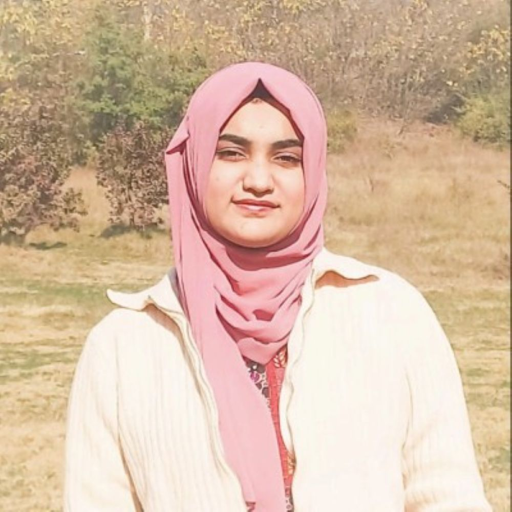

I'm Mishkat Noor — a sixth-semester Bioinformatics undergraduate at NUST, Pakistan. My focus exists at the convergence of neuroscience, genomics, and machine learning. Beyond research, I channel my vision into science communication and videography.
Whether curating genetic variants, building neural-network disease models, or producing compelling narratives, I approach my work with academic rigor and an editorial eye. True discovery is meant to be shared.
"My work is driven by the synergy between computational science and biology — bridging the gap between data and discovery."
Currently in my 6th semester of BS Bioinformatics at NUST — 36 subjects completed across mathematics, life sciences, and computer science.
A cross-disciplinary breakdown of competencies gained across computation, genomics, predictive and structural modeling.
"Science, at its best, is the most beautiful conversation humanity has ever had."